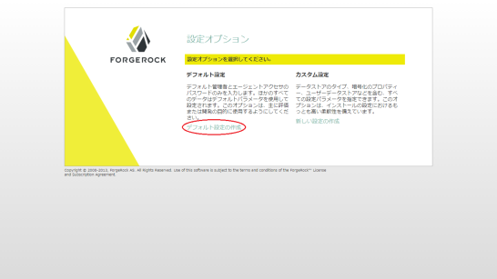

DTIのVPS上にOpenAMをセットアップしてみた話 [非公式手順]
OpenAMの環境を作っておこうと思って、DTIのVPS上のDebian jessieな環境で あれこれやってみたことをまとめておく。
(2015/1/4更新)
更新履歴
| 日付 | 更新内容 |
|---|---|
| 2015/1/4 | 手順の一部見直し。誤記、体裁の修正。 |
| 2014/12/14 | 最初の投稿 |
セットアップする環境の概要
- OpenAM Nightly Buildを使う。(OpenAM-13.0.0-SNAPSHOT_nightly_20141129.zip)
- Tomcat8上にデプロイ。
- JavaはTomcat8とともにインストールされるopenjdk-7-jreを使う。
- httpsの待ちうけはApacheのmod_sslで処理。
- ApacheとTomcat8はAJP 1.3 (mod_proxy_ajp) で接続。
また、セットアップを実行するサーバは、次のような環境であるとする。
- Debian jessie を使う。
- www.example.com という名前でアクセスできる。
Note
今回の手順をDTIのVPS上で実行すると、メモリ1GBのEntryプランではOpenAM の設定の途中でメモリ不足となり、セットアップが止まることがありました。 2GB以上の物理メモリを持つサーバーを使うのがお勧めです。
Tomcat8のセットアップ
tomcat8をインストールする。
$ sudo apt install tomcat8
JavaVMへのメモリ割り当ては、デフォルトの128MBのままだと、OpenAMの設定の途中で メモリ不足で止まることがあるので、256MBへ増やしておく。
$ sudo vi /etc/default/tomcat8
21行目のJAVA_OPTSの行の -Xmx128m の箇所を、 -Xmx256m へ書き換える。
#JAVA_OPTS="-Djava.awt.headless=true -Xmx128m -XX:+UseConcMarkSweepGC"
JAVA_OPTS="-Djava.awt.headless=true -Xmx256m -XX:+UseConcMarkSweepGC"
Tomcat8へは、Apache経由でAJPを使ってアクセスするため、server.xmlを 編集して、HTTP Connectorの設定をコメントアウトし、 AJP 1.3 Connectrの設定はコメントアウトを解除する。
$ sudo vi /etc/tomcat8/server.xml
95行目から始まるAJP 1.3 Connectorの設定がコメントアウトされているので、 コメントアウトを解除する。(前後の行の <!-- と --> を削除する)
<!-- Define an AJP 1.3 Connector on port 8009 -->
<Connector port="8009" protocol="AJP/1.3" redirectPort="8443" />
71行目から始まるHTTP Connectorの設定をコメントアウトする。 (<!-- と --> で囲む)
<!--
<Connector port="8080" protocol="HTTP/1.1"
connectionTimeout="20000"
URIEncoding="UTF-8"
redirectPort="8443" />
-->
Tomcat8を再起動する。
$ sudo service tomcat8 restart
Apacheのセットアップ
apache2をインストールする。
$ sudo apt install apache2
SSL用のサーバ設定を有効にする。mod_proxy_ajpも有効にしておく。
$ sudo a2enmod ssl proxy_ajp
$ sudo a2ensite default-ssl
Note
サーバ証明書の設定手順はここでは省いています。 そのまま動かすと、apache2のインストール過程で自動生成される 自己署名サーバ証明書が使われます。
https://www.example.com/openam/ へアクセスしたときに、AJPを使ってTomcat8上の OpenAMへ中継されるように構成する。
$ sudo vi /etc/apache2/sites-available/default-ssl.conf
133行付近、</VirtualHost> の直前に次の3行を書き足す。
<Location /openam>
ProxyPass ajp://localhost:8009/openam
</Location>
書き足した後は、こんな感じになる。
BrowserMatch "MSIE [17-9]" ssl-unclean-shutdown
<Location /openam>
ProxyPass ajp://localhost:8009/openam
</Location>
</VirtualHost>
</IfModule>
Apacheを再起動する。
$ sudo service apache2 restart
OpenAMのデプロイ
OpenAM Nightly Builds [2] から [Nightly Build] をダウンロードする。
ダウンロードしたzipファイルを展開する。
$ sudo apt install unzip
$ unzip OpenAM-13.0.0-SNAPSHOT_nightly_20141129.zip
$ ls openam
ClientSDK-13.0.0-SNAPSHOT.jar
ExampleClientSDK-CLI-13.0.0-SNAPSHOT.zip
ExampleClientSDK-WAR-13.0.0-SNAPSHOT.war
Fedlet-13.0.0-SNAPSHOT.zip
IDPDiscovery-13.0.0-SNAPSHOT.war
OpenAM-13.0.0-SNAPSHOT.war
OpenAM-DistAuth-13.0.0-SNAPSHOT.war
OpenAM-ServerOnly-13.0.0-SNAPSHOT.war
SSOAdminTools-13.0.0-SNAPSHOT.zip
SSOConfiguratorTools-13.0.0-SNAPSHOT.zip
ldif
legal-notices
$
OpenAMのwarファイルをデプロイする。デプロイ先のファイル名は openam.war にする。
$ sudo cp openam/OpenAM-13.0.0-SNAPSHOT.war /var/lib/tomcat8/webapps/openam.war
$ sudo chown tomcat8:tomcat8 /var/lib/tomcat8/webapps/openam.war
Tomcat8がデプロイを完了するのを待つ。Tomcat8のログファイルを見て、 “Deployment of ... openam.war has finished ...” が表示されたらデプロイ完了。
$ sudo tail -f /var/log/tomcat8/catalina.out
...
Dec 14, 2014 8:53:00 PM org.apache.catalina.startup.HostConfig deployWAR
INFO: Deploying web application archive /var/lib/tomcat8/webapps/openam.war
...
Dec 14, 2014 8:54:23 PM org.apache.catalina.startup.HostConfig deployWAR
INFO: Deployment of web application archive /var/lib/tomcat8/webapps/openam.war has finished in 83,701 ms
^C$
OpenAMのセットアップ
セットアップを行なう前に、OpenAMをセットアップするサーバ自身で、 www.example.comの名前解決ができていることを確認する。 (名前解決ができないとセットアップが途中でエラーとなる)
$ sudo ping -c 1 www.example.com
PING debian.example.com (nnn.nnn.nnn.nnn) 56(84) bytes of data.
64 bytes from debian.example.com (nnn.nnn.nnn.nnn): icmp_seq=1 ttl=64 time=0.305 ms
--- debian.example.com ping statistics ---
1 packets transmitted, 1 received, 0% packet loss, time 0ms
rtt min/avg/max/mdev = 0.305/0.305/0.305/0.000 ms
$
この後のセットアップで必要となるディレクトリを作成する。
$ sudo mkdir /usr/share/tomcat8/openam
$ sudo chown tomcat8:tomcat8 /usr/share/tomcat8/openam
$ sudo mkdir /usr/share/tomcat8/.openamcfg
$ sudo chown tomcat8:tomcat8 /usr/share/tomcat8/.openamcfg
https://www.example.com/openam にアクセスする。
「/usr/share/tomcat8への書き込みアクセスができません」という警告が出るが、 処置済みなので、そのまま [設定ページに進みます。] をクリックする。
[デフォルト設定の作成] をクリックする。
ライセンス条件 (CDDL Version1.0) が表示される。内容を確認する。
最後に [I accept the license agreement] にチェックを入れて、 [Continue] をクリックする。

管理用ユーザのパスワードと、エージェントアクセスの認証に使うパスワードを それぞれ設定する。いずれも16文字程度のパスワードにしておくのがよい。
入力ができ、右側に「了解」のチェックが表示されたら、[設定の作成] をクリックする。

インストールが始まるので、しばらく待つ。
「設定が完了しました」が表示されたら [ログインに進む] をクリックする。
「ユーザー名」に amadmin と入力、パスワードに先に設定した管理用ユーザの パスワードを入力して、[Log in] をクリックする。
管理画面が表示される。 以降の手順で、デフォルトで設定されているユーザを削除しておく。 [アクセス制御] をクリックする。
[最上位のレルム] をクリックする。
[対象] のユーザー一覧のanonymousとdemoにチェックを入れ、[削除] をクリックする。
[ログアウト] してセットアップ完了。
最後に注意点などを。
Note
ここでまとめた手順は、できるだけ少ない手数でOpenAMを動かすことを 目指しているので、OpenAM Installation Guide [1] にある推奨手順の いくつかを省いています。 きちんとセットアップしたい方は Installation Guide に従って セットアップしてください。
Caution
ここにある手順を実行すると、8009/tcp, 50389/tcp, 4444/tcp, 1689/tcp と、 起動ごとに動的に決まる1ポート、合計5つのポートが Listen する状態になります。 VPS上でセットアップする場合は、これらのポートへのアクセス制御を適切に設定 してください。
脚注
| [1] | OpenAM Installation Guide |
| [2] | OpenAM Nightly Builds |